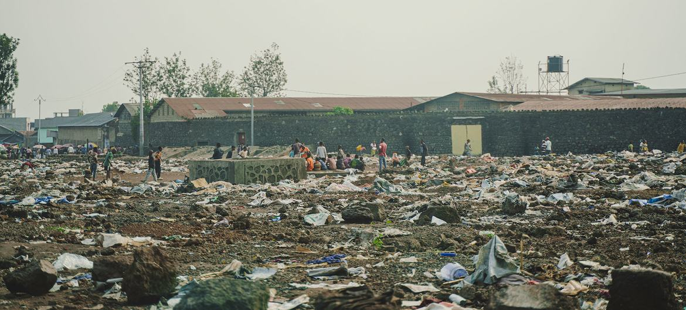
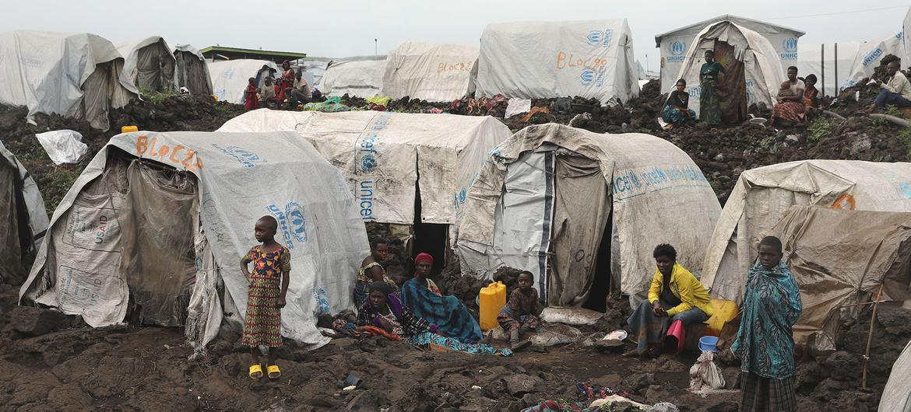
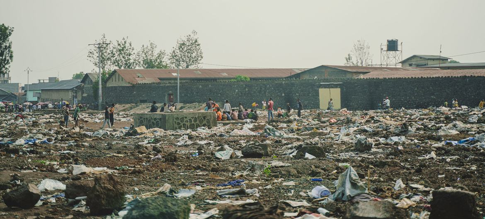
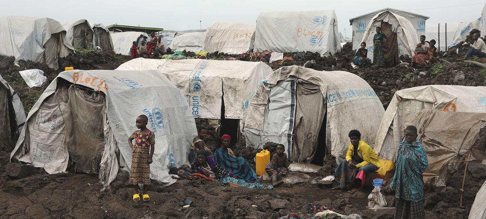

Resource Exploitation
Congo’s wealth should be its blessing — but instead it’s become a curse. Competing armed groups, corrupt networks, and foreign interests exploit these resources for profit, fueling cycles of violence. Illegal mining operations, often controlled by militias, use forced and child labor, exposing communities to danger and deprivation.
This isn’t abstract — behind every smartphone or electric vehicle battery that uses Congolese minerals are stories of displaced families, destroyed land, and futures stolen by war and greed. These are the hidden, human costs of global demand.
Ongoing Violence
Eastern provinces like North Kivu, Ituri, and South Kivu have seen rapid escalation in violence in recent years. Rebel factions such as M23 and the Allied Democratic Forces (ADF) continue brutal attacks on civilians, killing thousands and displacing millions.
Children and women bear a disproportionate share of this violence — caught between armed groups, terrorized by raids, and vulnerable to sexual violence and forced recruitment. Hospitals overflow, communities fracture, and even ceasefire agreements collapse under renewed fighting.
 



Humanitarian Impact
Today, more than **7 million Congolese are internally displaced**, forced from homes they once knew as safe. Many live in makeshift shelters — churches, schools, or under tarps — with no reliable food, water, or medical care. :contentReference[oaicite:3]{index=3}
Disease outbreaks, malnutrition, and lack of sanitation turn everyday life into a struggle against invisible enemies — long after bullets stop flying. Hospitals stretch beyond capacity, while humanitarian aid struggles to reach the frontlines of conflict zones.
Some attacks have been especially horrific — including reports of mass atrocities and gender‑based violence that defy understanding. :contentReference[oaicite:4]{index=4}
Survivor's Voices
**Ana**, speaking from Beni after escaping brutal assault: “They pretended they were protecting us. Then they beat us, they raped us, and they threatened to throw us into the lake. I thought I would never live again.” Without money, medical help was a distant dream.
**Paluku**, a 12‑year‑old boy, survived captivity with rebels. “We suffered terribly,” he said of life in remote camps where children were forced into labor and survival became a daily fight.
**Madeleine** lost her children in a village attack. “I did not have the strength anymore,” she recalls, describing how violence tore her family apart.
These are not statistics — these are real people whose lives have been reshaped by conflict, trauma, and loss. Their courage to speak out is a testament to human resilience, yet their need remains urgent.
Human Rights Under Attack
According to human rights organizations, abuses in eastern Congo include arbitrary detention, torture, forced displacement, and gender‑based violence. Children are increasingly recruited into armed groups, denied education, and exposed to life‑altering trauma.
These abuses violate international law and the most basic human rights — yet justice remains distant for millions. The cycle of violence cannot end without accountability and protection for civilians.
Ways to Help
Congo’s humanitarian crisis is one of the largest in the world — but it’s also one of the most neglected. Your support can turn despair into hope.
- Support verified organizations providing **medical care, food, clean water, and shelter**
- Donate to programs focused on **trauma counseling and women’s protection services**
- Share trusted information — stories deserve to be heard, not ignored
- Email leaders and advocate for increased humanitarian funding and peace initiatives
Every contribution — big or small — becomes a lifeline to families whose world has been torn apart. Visit our Action Page to take meaningful steps toward helping Congo’s civilians today.